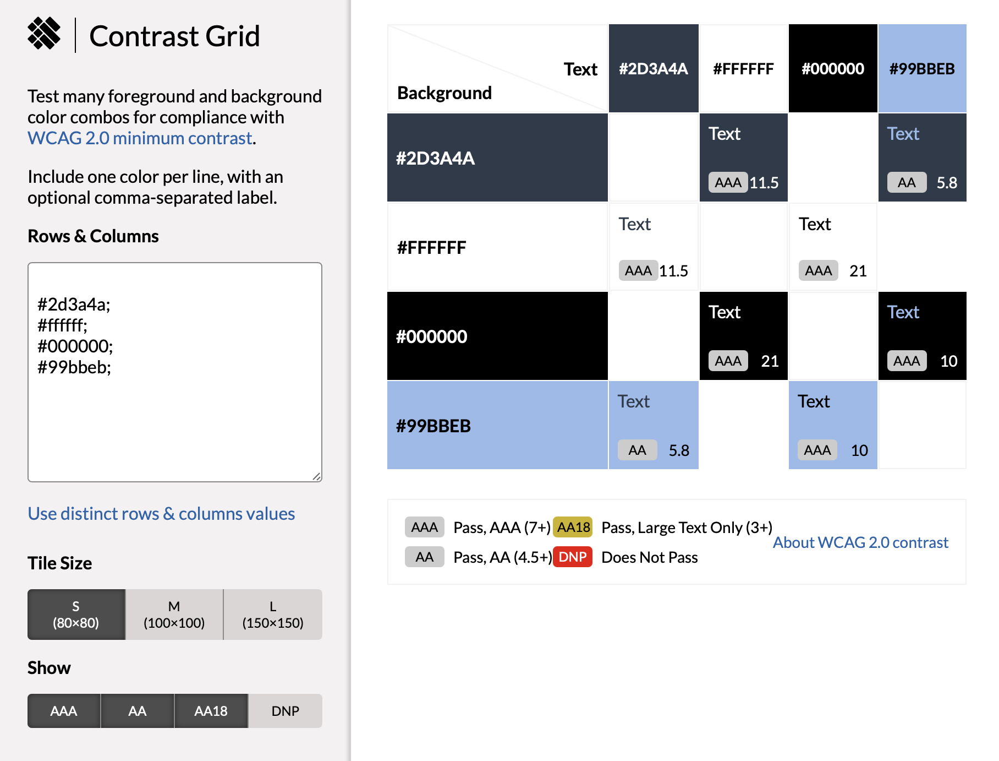

Farbkontraste
Einmal die normalen Logo Farben, die wir am Anfang benutzen wollten als Hintergrund Farben der Websites.
Und des Weiteren die Farbkontraste der letzendlich genutzten Farben:

Einmal die normalen Logo Farben, die wir am Anfang benutzen wollten als Hintergrund Farben der Websites.
Und des Weiteren die Farbkontraste der letzendlich genutzten Farben:
